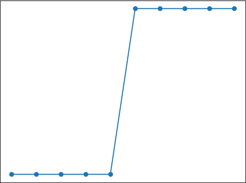
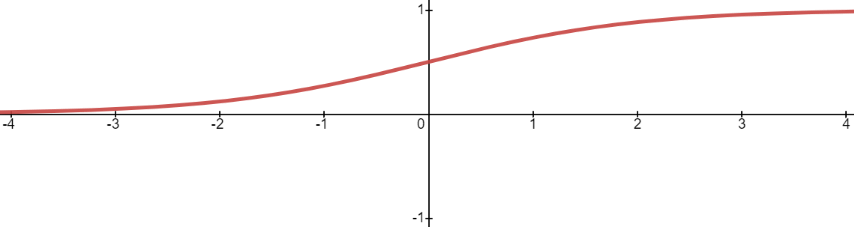
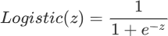
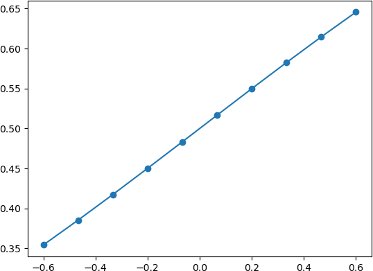
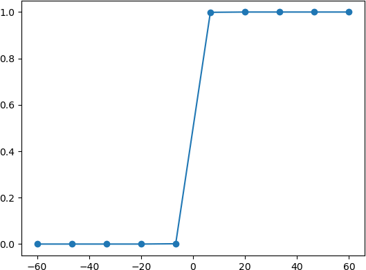

Logistic回归算法（分类问题）
我们知道有监督学习分为“回归问题”和“分类问题”，前面我们已经认识了什么是“回归问题”，从本节开始我们将讲解“分类问题”的相关算法。在介绍具体的算法前，我们先聊聊到底什么是分类问题。
什么是分类问题？
其实想要理解“分类”问题非常的简单，我们不妨拿最简单的“垃圾分类处理”的过程来认识一下这个词。现在考虑以下场景：小明拎着两个垃圾袋出门倒垃圾，等走到垃圾回收站的时候，小明发现摆放着两个垃圾桶，上面分别贴着“可回收”与“不可回收”。小明经过自己的判断后，把自己右手的垃圾放进了贴有“不可回收”的垃圾桶内，而左手的垃圾袋放进了“可回收”的垃圾桶内，最终完成了这次倒垃圾的过程。
其实上述“倒垃圾”的案例就说明了“分类问题”的过程。“可回收”与“不可回收”是两种预测分类，而小明是主观判断的个体，他通过自己日常接触的知识对“垃圾种类”做出判断，我们把这个程称作“模型训练”，只有通过“训练”才可以更加准确地判断“垃圾”的种类。小明进行了两次投放动作，每一次投放都要对“垃圾”种类做出预先判断，最终决定投放到哪个垃圾桶内。这就是根据模型训练的结果进行预测的整个过程。
下面对上述过程做简单总结：
- 类别标签：“可回收”与“不可回收”。
- 模型训练：以小明为主体，把他所接受的知识、经验做为模型训练的参照。
- 预测：投放垃圾的结果，预测分类是否正确。并输出预测结果。
分类问题是当前机器学习的研究热点，它被广泛应用到各个领域，比图像识别、垃圾邮件处理、预测天气、疾病诊断等等。“分类问题”的预测结果是离散的，它比线性回归要更加复杂，那么我们应该从何处着手处理“分类问题”呢，这就引出了本节要讲的 Logistic 回归分类算法。
Logistic回归算法
也许乍一看算法名字，你会认为它是用来解决“回归问题”的算法，但其实它是针对“分类问题”的算法。Logistic 回归算法，又叫做逻辑回归算法，或者 LR 算法（Logistic Regression）。分类问题同样也可以基于“线性模型”构建。“线性模型”最大的特点就是“直来直去”不会打弯，而我们知道，分类问题的预测结果是“离散的”，即对输出数据的类别做判断。比如将类别预设条件分为“0”类和“1”类（或者“是”或者“否”）那么图像只会在 “0”和“1”之间上下起伏，如下图所示：

图1：离散型数据
此时你就可能会有很多疑问，线性回归函数不可能“拟合”上述图像。没错，所以接下来我们要学习另一个线性函数 Logistic 函数。图1：离散型数据
注意：在机器学习中，Logistic 函数通常用来解决二元分类问题，也就是涉及两个预设类别的问题，而当类别数量超过两个时就需要使用 Softmax 函数来解决。
19 世纪统计学家皮埃尔·弗朗索瓦·韦吕勒发明了 Logistic 函数，该函数的叫法有很多，比如在神经网络算法中被称为 Sigmoid 函数，也有人称它为 Logistic 曲线。其函数图像如下所示：

图2：Logistic曲线函数
该函数图像的数学表达式如下：图2：Logistic曲线函数

e 称为自然常数，也就是一个固定值的“常量”，e-z 是以 e 为底、z 为变量的指数函数，还可以写为 e-x ，在编写程序代码时，通常将其写为 exp(-x)。至于这个表达式是如何推断出来的，我们没有必要深究，学会站在“巨人”的肩膀上学习也是一种难得的品质。Logistic 函数也称为 S 型生长曲线，取值范围为 (0,1)，它可以将一个实数映射到 (0,1) 的区间，非常适合做二元分类。当 z=0 时，该函数的取值为 0.5，随着 z 的增大，对应的函数值将逼近于 1；而随着 z 的减小，其函数值将逼近于 0。
对于 Logistic 函数而言，坐标轴 0 是一个有着特殊意义坐标，越靠近 0 和越远离 0 会出现两种截然不同的情况：任何大于 0.5 的数据都会被划分到 “1”类中；而小于 0.5 会被归如到 “0”类。因此你可以把 Logistic 看做解决二分类问题的分类器。如果想要 Logistic 分类器预测准确，那么 x 的取值距离 0 越远越好，这样结果值才能无限逼近于 0 或者 1。
下面通过极限的思想进一步对上述函数展开研究：我们可以考虑两种情况：当 x 轴坐标取值缩小时就会出现以下图像：

图3：Logistic函数
由此可见 Logistic 回归算法属于“线性”模型。而当 x 逐渐放大时则会出现以下情况：图3：Logistic函数

图4：Logistic函数
图4：Logistic函数
由上图可知，当 x 增大到一定程度时，Logistic 函数图像变成了“台阶”式图像，由此可知，该函数能够很好的“拟合”二分类问题函数图像。在数学上，我们把具有如图 4 所示，这种“阶梯式”图像的函数称为“阶跃函数”。
本节我们重点讲解了什么是分类问题，并且还花费了较大的篇幅讲解了 Logistic 函数，该函数解决二元分类问题的关键所在。Logistic 函数至关重要后续还会做相应介绍。
关注公众号「站长严长生」，在手机上阅读所有教程，随时随地都能学习。内含一款搜索神器，免费下载全网书籍和视频。

微信扫码关注公众号